Plog | 四月日常记录 | 2024
用看图写话的方式记录我的一个月。
因为不爱发朋友圈，但又想把生活记录下来，翻到相册，觉得还是以时间为线索记录更适合将来的我来阅读。
WEEK 1 | 南京之旅
清明节去了南京旅游，没想到现在大家的旅游热情这么高，热门景点几乎是寸步难行。
明孝陵
推荐指数：⭐⭐
门票：70 元
去的第一天逛了钟山风景区，日行三万步。明孝陵的自然风光很不错，但除此之外就什么都看不到了，不是很理解为什么要70元的门票。
但在这条路上看到了骆驼和大象雕塑，刚好塞尔达游戏里有这两个神兽，让我这个塞尔达观战选手有了一种奇妙的感觉。
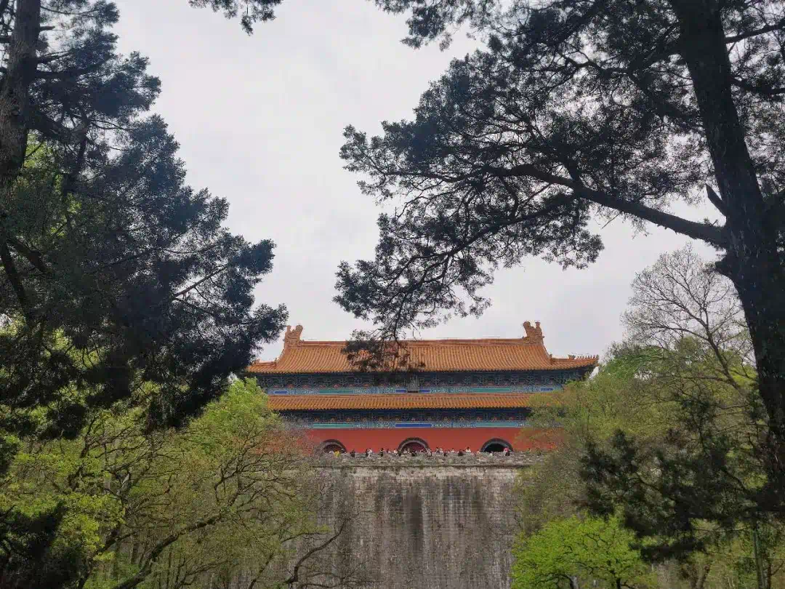
中山陵
推荐指数：⭐⭐⭐
门票：免费
中山陵是免费的，比较高，爬上去的视野很好，人也确实多。
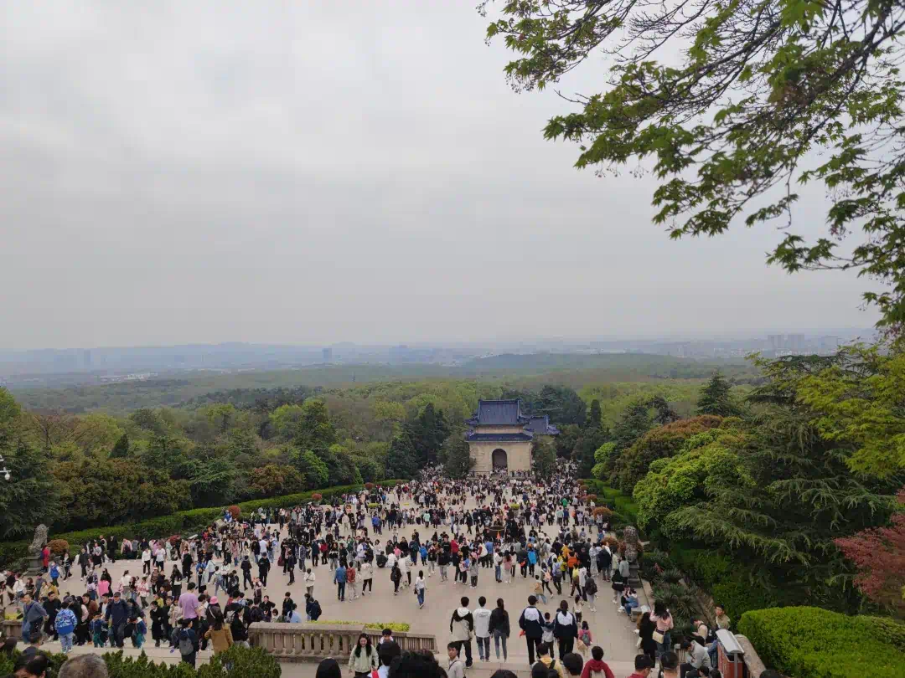
音乐台
推荐指数：⭐
门票：10元
音乐台已经变成了网红景点了，听说以前不收费的，现在还要10元门票，排队进去，人超级多，没有落脚的地方，所以就远远看了一下就走了。
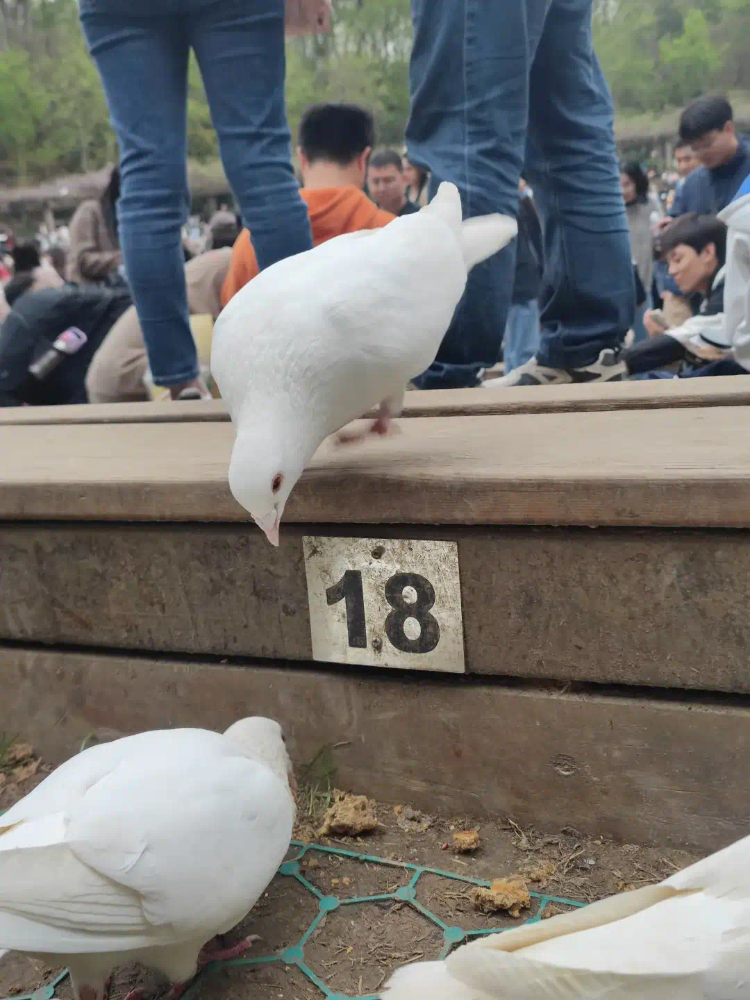
美龄宫
推荐指数：⭐⭐
门票：30元
美龄宫是一座漂亮的房子，我们在关门的最后几分钟进去的，遗憾的是因为人太多，只能按工作人员安排的路线排队走，所以体验也不是很好。
烤鸭店（忘记名字了）
推荐指数：⭐⭐⭐
晚上原本想在德基商场吃饭的，但那里的店基本都要排队一两个小时，遂放弃，然后在住的酒店附近找了一家烤鸭店，门口的装饰很有氛围感，烤鸭味道也不错。
玄武湖
推荐指数：⭐⭐⭐⭐
门票：免费
第二天去了玄武湖，有水有花有风的地方，慢慢地逛，也很惬意。
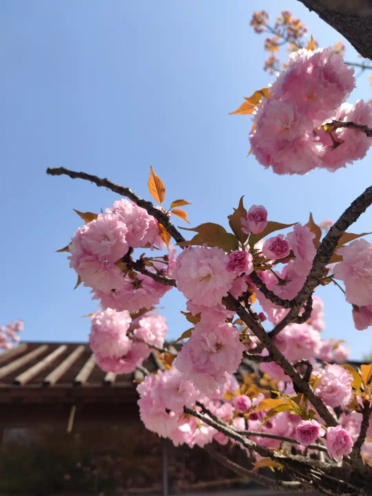

南京博物院
推荐指数：⭐⭐⭐
门票：免费，需提前在公众号预约，节假日很难约
下午逛南京博物院，看到了镇馆之宝——西汉金兽。
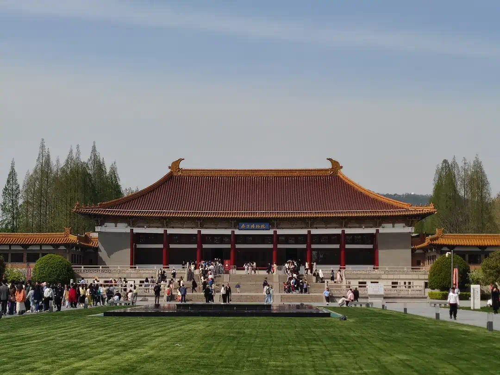
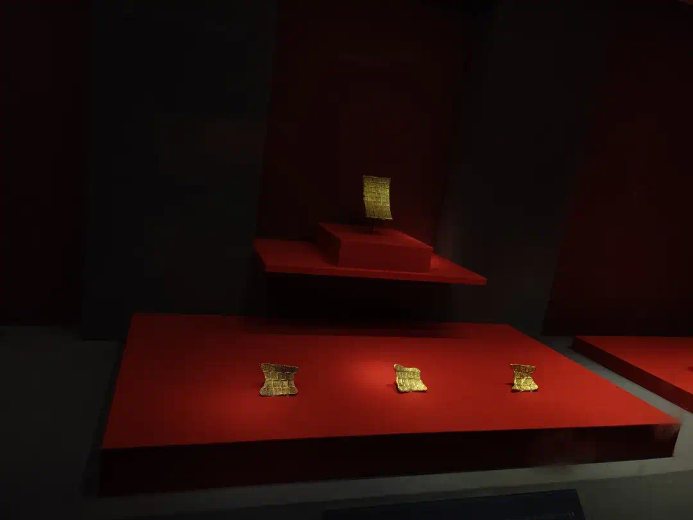
秦淮河夫子庙
推荐指数：⭐⭐
门票：免费，但夫子庙的花灯节要30元
晚上逛了秦淮河一带，人又巨多，进去了还不能原路返回，又只能按工作人员限定的路走。不推荐去，至少不推荐在节假日去。
老门东
推荐指数：⭐⭐⭐⭐
门票：免费
最后一天就是轻松的老门东闲逛，去的路上，看到很多汉服旗袍体验店，十家店能有八家都是。这里也确实很适合拍这类照片，下次如果和小姐妹来，可以体验一下。老门东人不是很多，路线也很自由，所以我很喜欢。
WEEK 2 | 悠闲周末
这个周末主打一个吃吃喝喝。
因为上个月我们搬家了，现在的厨房比以前好用，所以从这个月开始我们在家做饭的次数增多了，打算拍个合集，看看一年下来能做多少。
这周想去一个从来没去过的商场，查了一下娄山关路有几个挨着的商场，提前在家点那边的喜茶，没想到，竟然排队180多杯，要等两个小时，还好我们不着急，提前在家点好，去了商场再逛一会就拿到了。

小王在叮咚买菜上选的会员免费菜——爆米花原料，我以为他会翻车，竟然做得还挺好，糖稍微少了点，小王觉得不够甜，但我爱吃。
WEEK 3 | 逛公园 | 咖啡新体验
逛桂林公园，看到一颗百年香樟，铭牌上写的100年，不知道明年去看，会不会变成101年呢。

家里新添置了一个咖啡设备——摩卡壶。以前都是用手冲壶做咖啡，这周尝试了摩卡壶，发现摩卡壶做的咖啡味要浓郁很多，我更喜欢。
WEEK4 春天就是要赏花呀
上上周买的花，还剩几枝有生命力的，刚好这个酸奶瓶可以当花瓶。
春天过得真快啊，路边的花几天就变成了绿叶，好在还有植物园可以看花。因为住的近，经常可以进来逛逛，今年的花展正在举办中。
进门从右边的路走，便是五颜六色我叫不出名字的花，非常热闹。

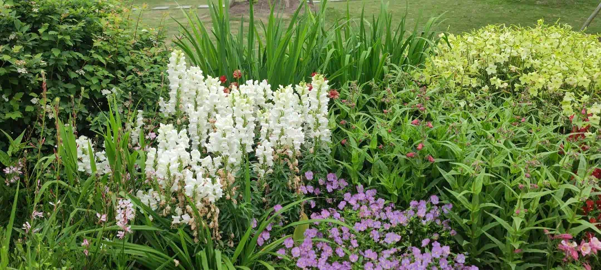
然后就是各种月季。
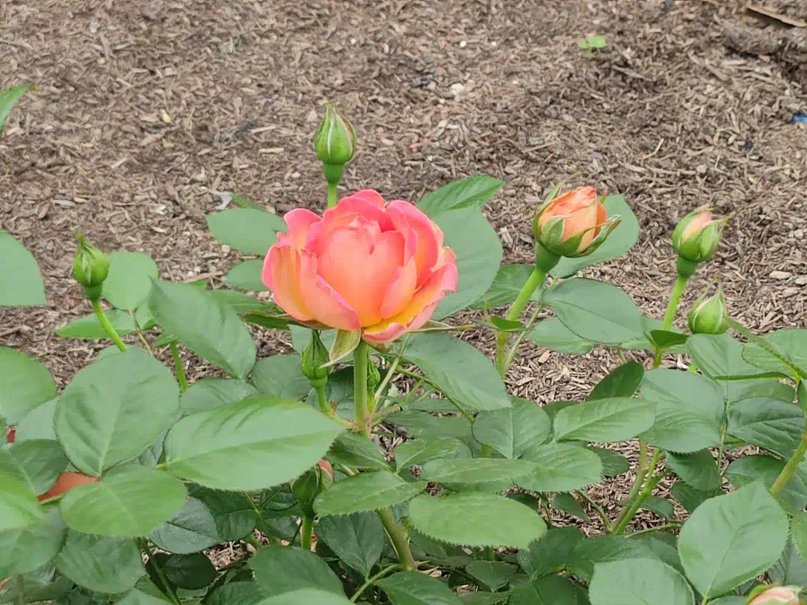
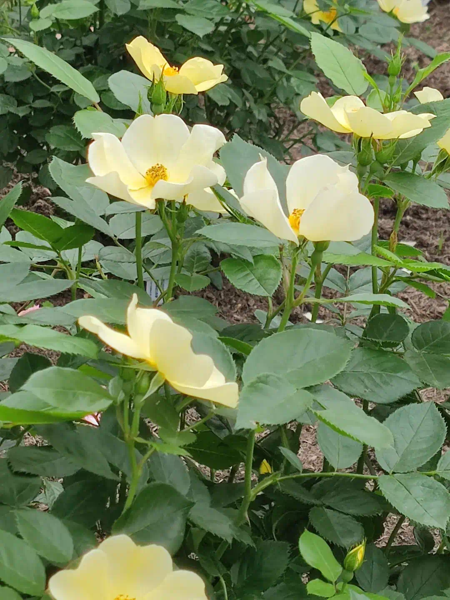
还发现一种尖尖果实的樱桃，满树都是，看起来很多汁，像能吃的样子
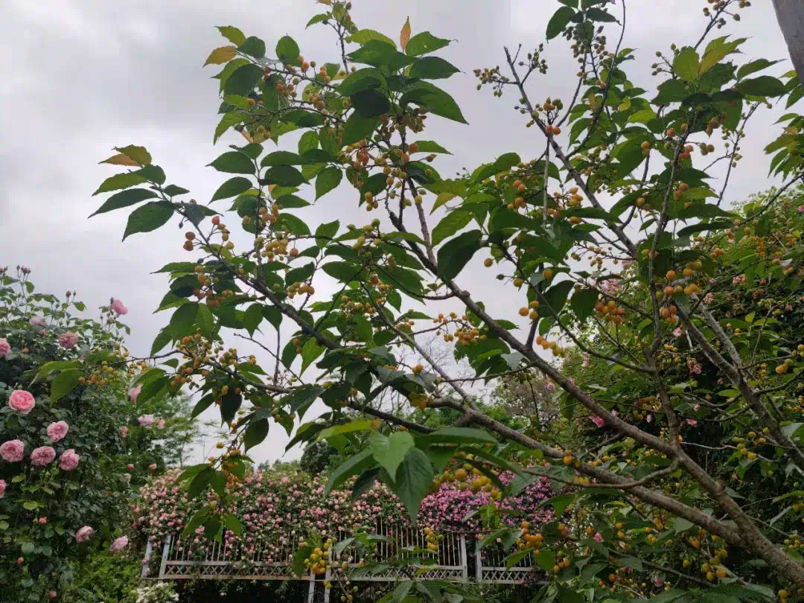
牡丹园的花已经开过一批了，现在剩的最多的就这两种。
如果要了解更多上海植物园的历史，就去 50 周年特展，里面记录了从植物园立项到现在的整个发展历程，还有各种植物科普。
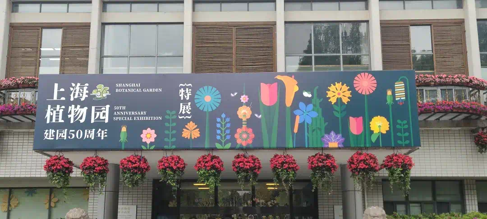
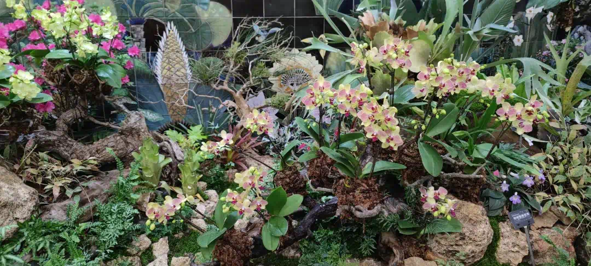
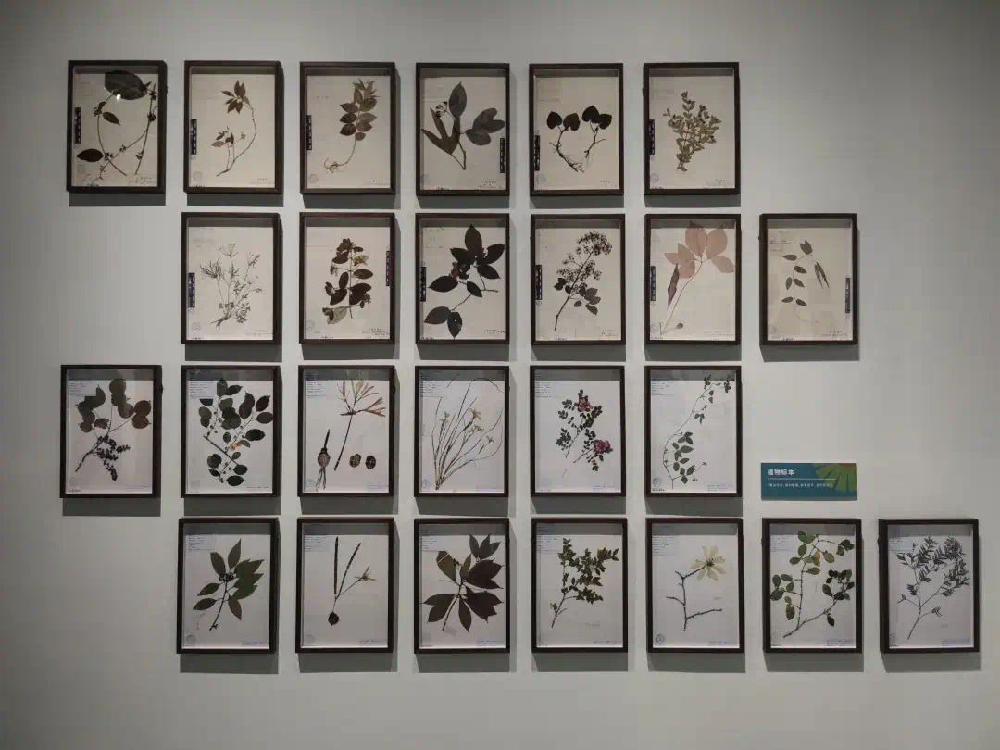